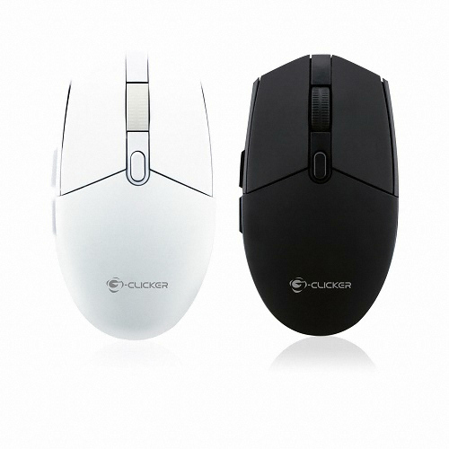
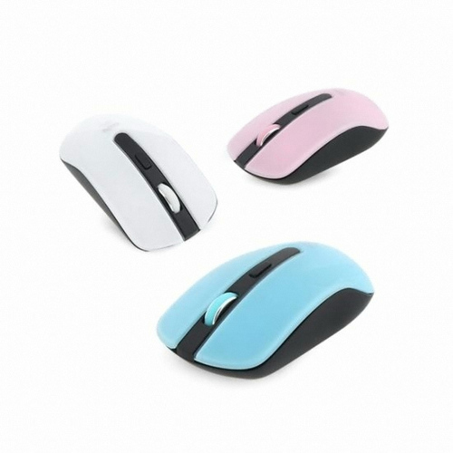
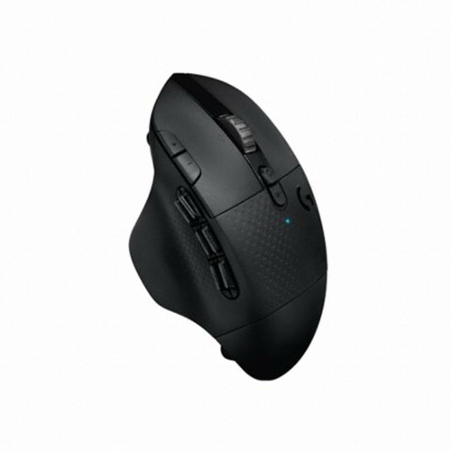
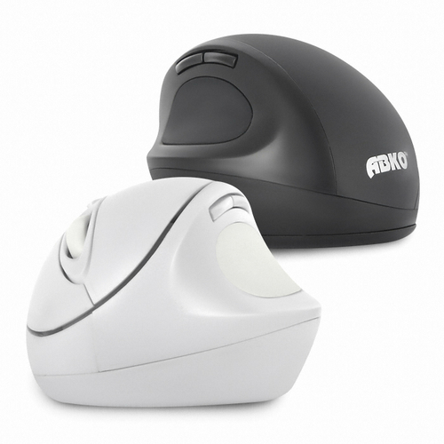

IT환경 구축안내
☆ 마우스 ☆
노트북 마우스패드만으로는 부족하기에 꼭 필요한 그것
마우스는 노트북패드만으로는 얻을 수 없는 충분한 조작감을 제공합니다..
일반적인 마우스는 유선에 검정색을 띄지만 더 나은 업무환경을 구성하기 위하여 사용되는 무선, 멀티버튼, S/W지원, 마우스크기, 제조사등 다양한 구분 요소를 가지고 있습니다.
마우스를 고르는 법은 아래와 같습니다.
마우스를 고르는 방법
1. 유무선 마우스
2. 색상별 마우스
3. 버튼 및 소프트웨어 지원
4. 버티컬 마우스
1. 무선마우스

지클리커 GM-W1000 무선마우스 :제품구매링크
무선마우스는 선이 없는 마우스로 건전지 혹은 내장배터리로 작동합니다.
블루투스방식
노트북과 스마트폰 양쪽에서 사용가능, 연결이 자주 끊킬수 있다.
무선동글(USB)방식
블루투스에 비해서 확실히 작동한다, USB포트가 필요하다, 동글을 잃어버릴 수도 있다.
2. 색상별 마우스

코시무선마우스 :제품구매링크
노트북과 키보드, 마우스등 다양한 제품들이 인테리어의 역할을 수행하기도 합니다. 다양한 색상의 마우스도 개인의 만족감을 높혀줄 수 있습니다.
3. 버튼 및 소프트웨어 지원

로지텍마우스 :제품구매링크
마우스를 보조적 수단을 넘어 하드웨어와 업무, 혹은 게이밍 장비로써 활용한다면 소프트웨어의 지원이 되어지는 많은 버튼이 제공된 마우스도 있습니다.
해당 형태의 마우스의 경우는 실무보다는 게이밍용으로 많이 쓰입니다.
4. 버티컬마우스

앱코 무선 버티컬마우스 :제품구매링크
기존의 넙적한 수평형 마우스는 인체 공학적이지 못하기에 손목에 부담을 주곤합니다..
인체의 자연스러운 손 모양대로 조종할수있는 마우스를 버티컬마우스라고 합니다.